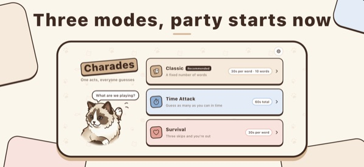
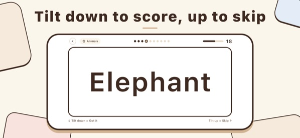
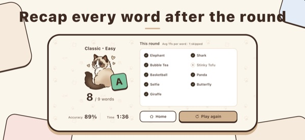

Charades: phone on your forehead, friends act it out
Great for parties, family dinners or killing time while you wait. The guesser holds the phone to their forehead while everyone else acts, mimes and makes noises. Tilt down when you get it, tilt up to skip, and the app keeps score.
Free on the App StoreiPhone and iPad (iOS 15 or later) · No Android version



Charades at a glance
- Words
- 2,000+ words in 12 categories: memes, food, animals, actions, movies and TV, jobs, objects, places, entertainment, sports, idioms, K-POP
- Modes
- Classic, Time Attack and Survival, plus three difficulty levels
- Players
- Two is enough; the more the merrier
- Devices
- iPhone and iPad, iOS 15 or later
- Price
- Free download; the full version is a one-time purchase, not a subscription
How to play Charades
All you need is one phone. No pens, no cards.
Pick a category and mode
Choose a word category, then Classic, Time Attack or Survival and a difficulty.
Phone on your forehead
The guesser holds the phone sideways on their forehead, screen facing out, so they can't see the word.
Friends act, you guess
Everyone else gives clues with gestures, faces or sounds, without saying the word.
Tilt down or up
Tilt down when you get it, tilt up to skip. On iPad, tap the right side for correct and the left side to skip. When time runs out, check the score and pass the phone.
Three modes and your own words
One word bank, three different paces.
- Classic10 words per round and 30 seconds per word by default. Easy to take turns.
- Time AttackGuess as many as you can in 45, 60 or 90 seconds and beat the high score.
- SurvivalThree skips and you're out. See who lasts longest.
- Custom wordsTurn friends' names and inside jokes into words; add many at once.
- Record reactionsRecord the round with the front camera, watch everyone's faces afterwards, and save it to Photos.
Example words
Food like Bubble Tea and Mapo Tofu; animals like Cat, Squirrel and Capybara; actions like Selfie, Somersault and Throw a Tantrum; movies like Transformers and The Avengers; jobs like Doctor, Teacher and Engineer; sports like Basketball, Golf and Parkour. Words range from easy to hard, so kids and adults can play together.
Price
Free to download. The free version draws only part of each category; watch a short video to play every word in that round, and the same goes for recording. The full version is a one-time purchase, not a subscription: it unlocks all words and recording for good and removes ads. On a new phone, tap Restore Purchases in the app.
FAQ
How many players do you need?
Two is enough: one guesses, one acts. With more people, split into teams and see which team gets the most.
How does it know I got it right?
Tilt the phone down for correct and up to skip; the app keeps score. On iPad, tap the right side for correct and the left side to skip.
Are the words in English?
Yes. Set the app to English and the words switch to English too.
Can I add my own words?
Yes. Type them under Custom words, separated by commas or new lines, to add several at once.
Is there a subscription?
No. It's free to download, and the full version is a one-time purchase that's yours for good.
Is there an Android version?
Not yet. It's on iPhone and iPad only (iOS 15 or later).
More apps by H.C
- Who's the Spy?A pass-the-phone party game of bluffing and deduction.
- Draw & GuessTake turns drawing while everyone else guesses.
- Truth or DareSpin to pick a player, with 2,000+ truths and dares.